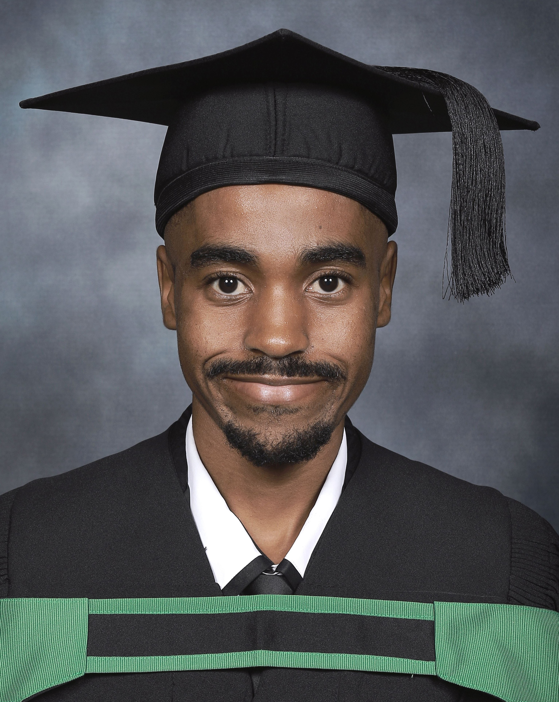
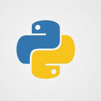
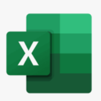

BSc (Mathematical Computer Sciences)
Majors: Statistics | Applied Mathematics
Institution: Sol Plaatje University
2019 - 2026
PGDip (Data Science)
Institution: STADIO
2026 - Present
My name is Keletso, and I am a freelance Data Scientist with a strong academic foundation in Mathematical Computer Sciences and Data Science. I help businesses turn data into clear, actionable insights using tools like Python, SQL, and modern machine learning techniques.
I am eager to collaborate and support your projects—whether through predictive modelling, customer analysis, or building dashboards that simplify complex data.
I charge R150per hour for any Data Science Services, and I am available Monday - Friday from 15:00-20:00. I work remotely.
Could we schedule a brief call to discuss your current data needs and how I can add value? Please let me know a convenient time, or feel free to email me.


I am a Postgraduate Diploma student in Data Science at STADIO, building on my BSc in Mathematical Computer Sciences (Applied Mathematics & Statistics) from Sol Plaatje University. My academic journey reflects consistent high performance:
Working with Data module: 81%
Introduction to Data Science & Statistics module: 76%
These results highlight my ability to master complex statistical concepts and apply them to real-world datasets with precision.
Currently, I am gaining hands-on industry exposure as a Technical Business Support Trainee at Umuzi.
My skills include Python programming, statistical modeling, machine learning, and data visualization, with proven ability to clean, analyze, and present insights that drive decision-making.
I am passionate about leveraging data to solve meaningful problems and thrive in collaborative environments where I can both learn from experienced professionals and deliver measurable impact. I am actively seeking internship and graduate opportunities where I can apply my analytical expertise, strengthen my Data Science and machine learning capabilities, and contribute to innovative projects.